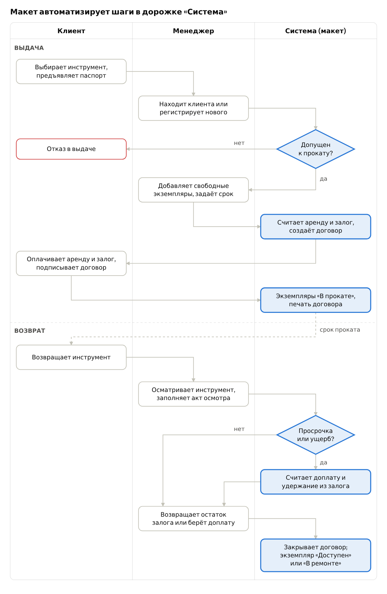

Термины и определения
| Термин | Определение |
|---|---|
| АИС | Автоматизированная информационная система — совокупность ПО, данных и персонала, автоматизирующая учёт и операции пункта проката. |
| Макет системы | Работающая упрощённая версия АИС с интерфейсом, реализующая часть функций (один бизнес-процесс) для демонстрации. |
| Прокат (аренда) | Временная передача инструмента клиенту за плату на оговорённый срок. |
| Пункт проката | Точка выдачи и приёма инструмента; объект автоматизации. |
| Клиент (арендатор) | Физическое или юридическое лицо, берущее инструмент в прокат. |
| Менеджер пункта проката | Сотрудник, оформляющий выдачу, приём и оплату; основной пользователь АИС. |
| Администратор | Сотрудник, ведущий справочники (каталог, тарифы, сотрудники) и просматривающий отчёты. |
| Модель инструмента | Позиция каталога: наименование, категория, характеристики, тариф (например, «Перфоратор Makita HR2470»). |
| Экземпляр инструмента | Конкретный физический предмет модели с инвентарным номером и состоянием. |
| Инвентарный номер | Уникальный код экземпляра (штрихкод/QR) для учёта. |
| Тариф | Стоимость проката модели за период (сутки, выходные, неделя). |
| Залог | Денежная сумма или документ, оставляемые клиентом в обеспечение возврата; возвращается при сдаче исправного инструмента. |
| Договор проката | Документ, фиксирующий клиента, экземпляры, срок, стоимость и залог; основание выдачи. |
| Бронирование | Резервирование экземпляра на будущую дату без выдачи. |
| Выдача | Передача экземпляра клиенту по договору; статус экземпляра меняется на «В прокате». |
| Возврат (приём) | Приём экземпляра от клиента с осмотром, расчётом итоговой суммы и закрытием договора. |
| Просрочка | Возврат позже даты окончания договора; влечёт доплату по тарифу или штраф. |
| Акт осмотра (дефектовка) | Запись о состоянии инструмента при выдаче и возврате; основание удержания из залога. |
| Статус экземпляра | Состояние в учёте: «Доступен», «Забронирован», «В прокате», «В ремонте», «Списан». |
| BPMN | Business Process Model and Notation — нотация моделирования бизнес-процессов (используется в лабораторной работе 2). |
| ER-диаграмма | Диаграмма «сущность–связь», описывающая структуру базы данных (лабораторная работа 3). |
| СУБД | Система управления базами данных. |
Обзор предметной области и аналогов
Готовые системы проката решают одну и ту же задачу — учёт доступности каждого экземпляра и оформление выдачи и возврата, но стоят от 850 ₽ до 499 $ в месяц и избыточны для малого пункта. Макет берёт их ядро: каталог со статусами, договор, залог, расчёт просрочки.
Как работает пункт проката инструментов
Пункт сдаёт в аренду электро- и бензоинструмент (перфораторы, болгарки, шуруповёрты, катки, генераторы, строительные леса) частным лицам и бригадам. Клиент выбирает инструмент, предъявляет паспорт, вносит залог и оплату за срок, подписывает договор. При возврате менеджер осматривает инструмент, начисляет доплату за просрочку или повреждения и возвращает залог.
Типичные проблемы при бумажном или Excel-учёте:
- непонятно, какие экземпляры свободны сейчас и на нужную дату, — возникают двойные брони;
- договор заполняется вручную, оформление занимает время, возможны ошибки в суммах;
- просрочки не отслеживаются автоматически;
- нет истории клиента (надёжный / в чёрном списке) и истории ремонтов экземпляра;
- нет отчётов по выручке и востребованности моделей.
Сравнение аналогов
| Система | Тип | Цена | Бронирование | Залоги | Штрихкоды | Ремонт | Онлайн-витрина |
|---|---|---|---|---|---|---|---|
| Rent in Hand (РФ) | Облако + iOS/Android | от 850 ₽/мес | Да, виджет и ВК | Да | Не указано | Да | Виджет |
| Класс365 (РФ) | Облако: CRM, склад, касса | По запросу | Заявки и статусы | Не указано | Не указано | Нет | Нет |
| Booqable | Облако + iOS/Android | от 29 $/мес | Да, защита от двойной брони | Да, сумма или % | Да | Не указано | Да |
| EZRentOut | Облако + мобильное приложение | от 399 $/мес | Да, календарь | Не указано | Да, QR/RFID | Да, плановое ТО | Да |
| Журнал / Excel | Ручной учёт | 0 ₽ | Нет | Вручную | Нет | Нет | Нет |
Выводы по обзору
- Все аналоги строятся вокруг статуса экземпляра и договора проката — это и есть ядро, которое реализует макет.
- Залог, тариф за период и доплата за просрочку — специфика проката, которой нет в обычных CRM; её нужно считать автоматически.
- Онлайн-витрина, мобильные приложения, интеграция с кассами и RFID — за рамками макета; они указаны в ТЗ как развитие системы.
- Собственная АИС оправдана для малого пункта (1–3 сотрудника, до 500 экземпляров): без абонплаты, данные хранятся локально, интерфейс под один процесс.
Данные с сайтов разработчиков и Capterra на 2 октября 2026 г.
1 Общие сведения
ТЗ оформлено по структуре ГОСТ 34.602-2020 «Техническое задание на создание автоматизированной системы» в сокращённом для учебного проекта виде.
1.1 Наименование системы
- Полное наименование: Автоматизированная информационная система учёта проката инструментов.
- Краткое наименование: АИС «Прокат инструментов» (далее — Система).
- Предмет разработки: макет Системы с реализацией бизнес-процесса «Выдача и возврат инструмента».
1.2 Заказчик и разработчик
- Заказчик: кафедра [название кафедры], преподаватель [ФИО] (условно — пункт проката инструментов).
- Разработчики: студенты группы [номер] [ФИО 1], [ФИО 2].
1.3 Основание для разработки
Учебный план дисциплины «Введение в программную инженерию», задание на лабораторные работы, вариант «Прокат инструментов».
1.4 Сроки
- Начало работ: [дата выдачи задания].
- Окончание работ: [дата защиты последней лабораторной работы].
1.5 Порядок оформления и предъявления результатов
Результаты каждого этапа предъявляются на лабораторном занятии в виде отчёта (электронно или на бумаге) с устной защитой. Макет предъявляется демонстрацией на ноутбуке разработчика и исходным кодом.
2 Назначение и цели создания системы
2.1 Назначение
Система предназначена для автоматизации работы пункта проката: ведения каталога инструментов и базы клиентов, оформления договоров выдачи и возврата, расчёта стоимости и залога, контроля просрочек и получения отчётов.
Система используется сотрудниками пункта (менеджер, администратор) на рабочем месте стойки выдачи.
2.2 Цели создания
| Цель | Критерий достижения |
|---|---|
| Сократить время оформления выдачи | Договор оформляется не более чем за 3 минуты для клиента из базы |
| Исключить выдачу занятого или неисправного инструмента | В договор можно добавить только экземпляр со статусом «Доступен» |
| Исключить ошибки в расчётах | Стоимость, залог и доплата за просрочку считаются автоматически по тарифу |
| Контролировать сроки возврата | Список просроченных договоров виден на главном экране |
| Хранить историю клиентов и экземпляров | Для любого клиента и экземпляра доступен список договоров |
| Получать управленческую информацию | Отчёт по выручке и загрузке инструмента за период |
3 Характеристика объекта автоматизации
3.1 Объект автоматизации
Объект — пункт проката строительного и садового инструмента с одной точкой выдачи. Для проектирования приняты допущения:
- штат: 1–3 сотрудника, работа в одну смену;
- парк: до 500 экземпляров и до 150 моделей в 10–15 категориях;
- нагрузка: до 50 выдач и возвратов в день;
- срок проката: от 1 суток до 30 дней, оплата вперёд за весь срок.
3.2 Роли пользователей
| Роль | Что делает в Системе | Работает в Системе |
|---|---|---|
| Менеджер пункта | Регистрирует клиентов, оформляет выдачу и возврат, принимает оплату, смотрит просрочки | Да |
| Администратор | Всё, что менеджер, плюс каталог, тарифы, списание, сотрудники, отчёты | Да |
| Клиент | Выбирает инструмент, предъявляет документ, платит, получает и возвращает инструмент | Нет (в макете нет личного кабинета) |
| Мастер по ремонту | Принимает неисправный инструмент, возвращает его в статус «Доступен» | Роль администратора в макете |
3.3 Автоматизируемый бизнес-процесс
В макете реализуется процесс «Выдача и возврат инструмента» — основной и самый частый процесс пункта; именно он моделируется в BPMN в лабораторной работе 2. Схема процесса по участникам приведена на рисунке 1; выделенные шаги программирует макет, остальное выполняют люди.

Расчёт сумм при возврате: итог = оплаченная аренда + дни просрочки × суточный тариф × 1,5 + ущерб по акту осмотра. Доплата и ущерб удерживаются из залога; если залога не хватает, клиент доплачивает разницу. Коэффициент 1,5 — параметр, задаваемый администратором.
Другие процессы пункта (бронирование, ремонт, закупка и списание, отчётность) описаны в разделе 4 как функции полной Системы.
4 Требования к системе
Полная Система состоит из шести подсистем; макет реализует три из них целиком, а справочники — в объёме, нужном для выдачи и возврата.
4.1 Требования к функциям
| № | Подсистема | Функция | В макете |
|---|---|---|---|
| Ф-1 | Авторизация | Вход по логину и паролю, разграничение прав «Менеджер» / «Администратор» | Да |
| Ф-2 | Каталог | Просмотр и поиск моделей по названию и категории с числом свободных экземпляров | Да |
| Ф-3 | Каталог | Добавление и редактирование категорий, моделей, тарифов и залогов | Частично (данные загружаются скриптом) |
| Ф-4 | Каталог | Учёт экземпляров: инвентарный номер, статус, история договоров | Да |
| Ф-5 | Клиенты | Регистрация клиента (ФИО, телефон, документ), поиск по телефону и ФИО | Да |
| Ф-6 | Клиенты | История прокатов клиента, отметка «чёрный список» с запретом выдачи | Да |
| Ф-7 | Прокат | Оформление договора выдачи: клиент, один или несколько свободных экземпляров, срок, авторасчёт стоимости и залога | Да |
| Ф-8 | Прокат | Печатная форма договора (HTML-страница для печати) | Да |
| Ф-9 | Прокат | Оформление возврата: осмотр, расчёт просрочки и ущерба, возврат залога, закрытие договора | Да |
| Ф-10 | Прокат | Продление срока договора с доплатой | Нет |
| Ф-11 | Прокат | Главный экран: выдано сегодня, к возврату сегодня, просроченные договоры | Да |
| Ф-12 | Бронирование | Резервирование экземпляра на дату с проверкой пересечений | Нет |
| Ф-13 | Обслуживание | Передача в ремонт и возврат из ремонта, списание экземпляра | Частично (смена статуса) |
| Ф-14 | Отчёты | Выручка за период, самые востребованные модели, загрузка парка | Нет |
4.2 Требования к информационному обеспечению
Данные хранятся в реляционной БД. Перечень сущностей — основа ER-диаграммы в лабораторной работе 3.
| Сущность | Ключевые атрибуты | Связи |
|---|---|---|
| Категория | код, название | 1 : N Модель |
| Модель инструмента | код, название, производитель, характеристики, тариф за сутки, сумма залога | 1 : N Экземпляр |
| Экземпляр | инвентарный номер, статус, дата покупки, примечание | N : M Договор (через Позицию) |
| Клиент | код, ФИО, телефон, серия и номер документа, признак чёрного списка | 1 : N Договор |
| Сотрудник | код, ФИО, логин, хэш пароля, роль | 1 : N Договор |
| Договор проката | номер, дата выдачи, плановая и фактическая дата возврата, статус, сумма аренды, сумма залога, итог | 1 : N Позиция, 1 : N Платёж |
| Позиция договора | экземпляр, тариф на момент выдачи, состояние при выдаче и возврате, сумма ущерба | — |
| Платёж | дата, вид (аренда / залог / возврат залога / доплата), способ, сумма | — |
Целостность данных: экземпляр не может входить в два открытых договора одновременно; дата возврата не раньше даты выдачи; удаление клиента или экземпляра с договорами запрещено (только списание / архив).
4.3 Требования к интерфейсу
- Веб-интерфейс на русском языке, корректно отображается при ширине окна от 1280 px.
- Экраны макета: вход; главная панель; каталог; клиенты; новая выдача; возврат; карточка договора с печатной формой.
- Оформление выдачи — не более 3 шагов: клиент → инструменты и срок → подтверждение.
- Ошибки ввода показываются рядом с полем; необратимые действия (закрытие договора, списание) требуют подтверждения.
- Статусы выделяются цветом и текстом: просроченные договоры — красным.
4.4 Требования к надёжности и безопасности
- Пароли хранятся только в виде хэша; без входа страницы Системы недоступны.
- Функции администратора недоступны роли «Менеджер».
- Персональные данные клиентов обрабатываются с учётом 152-ФЗ; в макете используются только вымышленные данные.
- Операции выдачи и возврата выполняются в одной транзакции БД: при ошибке статусы не меняются.
- Резервное копирование — копирование файла БД (в полной Системе — ежедневно).
4.5 Требования к программному и техническому обеспечению
Архитектура — веб-приложение «клиент–сервер»: сервер и БД на одном компьютере пункта, доступ через браузер.
| Компонент | Выбор | Обоснование |
|---|---|---|
| Язык | Python 3.12 | Бесплатный, кроссплатформенный, изучен командой, быстрая разработка макета |
| Веб-фреймворк | Flask 3 + шаблоны Jinja2 | Минимальный объём кода, не навязывает структуру; Django избыточен для 7 экранов |
| СУБД | SQLite 3 | БД — один файл, не требует сервера и настройки, встроена в Python, поддерживает SQL и транзакции; для 1–3 рабочих мест производительности достаточно. При росте — переход на PostgreSQL |
| Интерфейс | HTML + Bootstrap 5 | Готовые таблицы, формы и стили без собственного CSS |
| BPMN-диаграмма | draw.io (diagrams.net) или bpmn.io | Бесплатно, работает в браузере, есть набор элементов BPMN 2.0 |
| ER-диаграмма | draw.io или dbdiagram.io | Бесплатно; dbdiagram строит диаграмму из текста и экспортирует SQL |
| Среда разработки и хранение кода | VS Code / PyCharm, Git + GitHub | Совместная работа двух разработчиков, история изменений |
Техническое обеспечение: ПК или ноутбук с Windows 10+, macOS 12+ или Linux, 4 ГБ ОЗУ, 200 МБ свободного места, современный браузер (Chrome, Firefox, Edge, Safari); принтер — для печати договора. Интернет для работы не нужен.
4.6 Перспективы развития
По итогам обзора аналогов: онлайн-бронирование с сайта, сканирование штрихкодов инвентарных номеров, SMS-напоминания о возврате, интеграция с онлайн-кассой (54-ФЗ), несколько точек выдачи.
5 Состав и содержание работ
Работа выполняется в пять этапов, совпадающих с лабораторными работами; максимум — 40 баллов за работы плюс 10 за посещение лекций.
| Этап | Содержание | Результат | Баллы |
|---|---|---|---|
| 1 ТЗ (ЛР 1) | Обзор предметной области и аналогов, глоссарий, требования | Настоящее ТЗ | 7 |
| 2 Модель процесса (ЛР 2) | BPMN-диаграмма процесса «Выдача и возврат инструмента» с дорожками участников и описание | Диаграмма и пояснительная записка | 8 |
| 3 Модель данных (ЛР 3) | ER-диаграмма по сущностям п. 4.2, скрипт создания БД | Диаграмма и SQL-скрипт | 5 |
| 4 Разработка макета | Программирование функций с отметкой «Да» в п. 4.1, тестовые данные | Исходный код, работающий макет | 10 (демонстрация) |
| 5 Документация (ЛР 4) | Описание программы и руководство пользователя | Два документа | 5 + 5 |
6 Порядок контроля и приёмки
Макет принимается, если на демонстрации успешно выполнены все сценарии:
- Вход менеджером; попытка входа с неверным паролем отклоняется.
- Регистрация нового клиента и поиск его по телефону.
- Выдача двух инструментов на 3 суток: сумма и залог совпадают с ручным расчётом, статусы стали «В прокате», договор выводится на печать.
- Экземпляр «В прокате» или «В ремонте» нельзя добавить в новый договор; клиенту из чёрного списка выдача запрещена.
- Возврат в срок без повреждений: залог возвращён полностью, экземпляры «Доступен».
- Возврат с просрочкой 2 дня и повреждением: доплата и удержание из залога рассчитаны по формуле п. 3.3, экземпляр «В ремонте».
- Просроченный договор виден на главном экране и выделен.
Тестовая БД для демонстрации: не менее 5 категорий, 15 моделей, 30 экземпляров, 10 клиентов, 1 просроченный договор.
7 Требования к документированию
| Документ | Ориентир по стандарту |
|---|---|
| Техническое задание | ГОСТ 34.602-2020 |
| Описание бизнес-процесса | Нотация BPMN 2.0 |
| ER-диаграмма | Нотация Чена или Crow's Foot |
| Описание программы | ГОСТ 19.402-78 |
| Руководство пользователя | РД 50-34.698-90, п. 3.4 |
Отчёты оформляются по ГОСТ 7.32-2017: шрифт Times New Roman 14, межстрочный интервал 1,5, поля 30/15/20/20 мм, нумерация страниц внизу по центру.
8 Источники разработки
- ГОСТ 34.602-2020. Информационные технологии. Комплекс стандартов на автоматизированные системы. Техническое задание на создание автоматизированной системы.
- ГОСТ 34.003-90. Информационная технология. Комплекс стандартов на автоматизированные системы. Автоматизированные системы. Термины и определения.
- ГОСТ 7.32-2017. Отчёт о научно-исследовательской работе. Структура и правила оформления.
- Федеральный закон от 27.07.2006 № 152-ФЗ «О персональных данных».
- Гражданский кодекс Российской Федерации, часть вторая, ст. 626–631 (договор проката).
- Rent in Hand — программа для учёта проката инструмента (дата обращения: 02.10.2026).
- Класс365 — учёт проката или аренды (дата обращения: 02.10.2026).
- Booqable — Tool Rental Software (дата обращения: 02.10.2026).
- EZRentOut — Capterra (дата обращения: 02.10.2026).